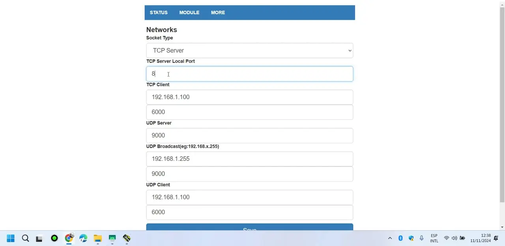

Por dentro es un ESP8285 con 1 MB de flash ya programado como convertidor serial a WiFi. Es compatible en pines con el HC-05/HC-06.
Es buena práctica tener el WiFi en un módulo aparte del micro: se evitan interferencias y el sistema es más robusto.
El DT-06 (ESP8285) es un puente transparente entre serial y WiFi. Tiene los mismos pines que los módulos Bluetooth HC-05/HC-06, así que un proyecto Bluetooth puede pasar a WiFi sin cambiar el hardware, y más adelante a IoT. En esta primera clase de la serie lo conectamos a un adaptador USB-serial, lo configuramos desde su página web interna (serial, WiFi y red) y comprobamos que lo que entra por serial sale por TCP y al revés, tanto desde el computador como desde el celular.

Por dentro es un ESP8285 con 1 MB de flash ya programado como convertidor serial a WiFi. Es compatible en pines con el HC-05/HC-06.
Es buena práctica tener el WiFi en un módulo aparte del micro: se evitan interferencias y el sistema es más robusto.
Al alimentarlo, el módulo crea una red WiFi abierta (Doit_WiFi_…). Nos conectamos a ella y abrimos en el navegador la dirección del módulo, 192.168.4.1 (es el gateway que muestra Hercules en UDP Setup).
En MODULE > Serial se configura la velocidad. Dejamos 9600 baudios porque luego lo simularemos en Proteus; en una aplicación real conviene 115200 o más para trabajar más en tiempo real.
En MODULE > WiFi se cambia el nombre de la red que crea el módulo (SoftAP). En Station Settings se puede poner el nombre y la clave de una red con internet para que el módulo se conecte a ella; eso lo usaremos más adelante.
Cada cambio se guarda con Save y solo se aplica cuando el módulo se reinicia (MORE > Restart o desconectar y volver a conectar).
En MODULE > Networks se elige el tipo de socket: TCP Server, TCP Client, UDP Server, UDP Broadcast o UDP Client. Lo ponemos como TCP Server en el puerto 200 y guardamos.
En una ventana de Hercules abrimos el puerto serial del adaptador (9600). En otra, en TCP Client, nos conectamos a 192.168.4.1, puerto 200. Lo que se escribe en una ventana aparece en la otra: el puente funciona en los dos sentidos.
Apagamos los datos móviles, conectamos el celular a la red del módulo y en una app de cliente TCP ponemos la IP 192.168.4.1 y el puerto 200. Los mensajes del celular llegan al serial y los del serial llegan al celular.
Cualquier dispositivo que hable TCP puede conectarse así. En las siguientes clases lo conectamos al STM32 y a aplicaciones de control.